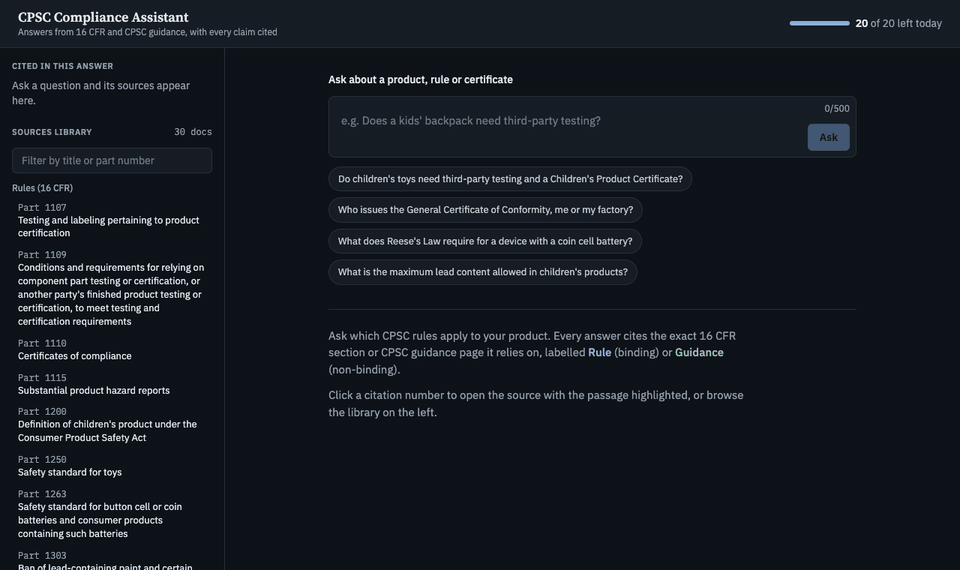
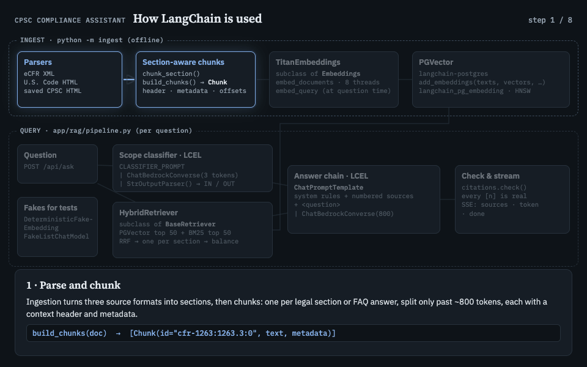
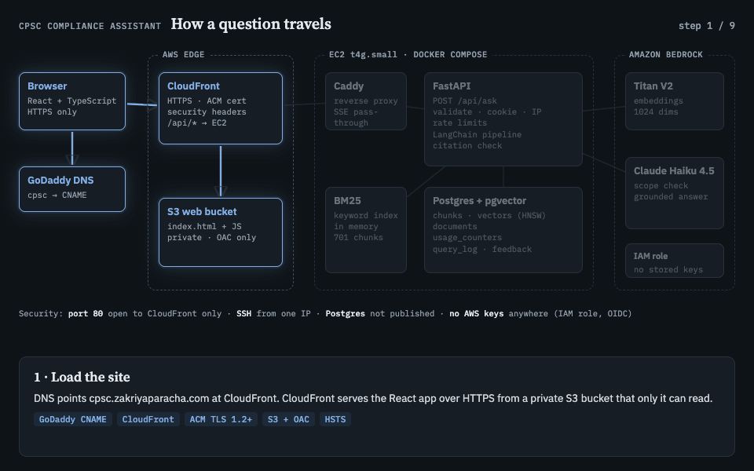

Overview
A web app that answers US consumer product safety compliance questions in plain English, with every claim cited to the exact regulation, statute or CPSC guidance page it came from. Ask "Do I need a Children's Product Certificate for a wooden toy I import?" and you get a short answer with numbered citations. Click one and the source opens, scrolled to the highlighted passage.
The rules are hard to navigate because they come from three kinds of source that don't link to each other: binding regulations (16 CFR), the statutes Congress passed (CPSA and FHSA), and CPSC's plain-language guidance, which isn't binding. General-purpose chatbots answer from memory and cite nothing. This assistant answers only from the sources it retrieves, and labels each one as a Rule, a Law or Guidance.

How it works
- Ingest. 16 CFR parts are pulled from the eCFR API, the CPSA and FHSA from govinfo, and 17 CPSC guidance pages are parsed from saved HTML. Each legal section becomes one chunk, and each chunk starts with a header naming its source, so citations point to exact sections.
- Embed. Chunks are embedded with Amazon Titan V2 and stored in Postgres with pgvector, behind an HNSW index.
- Retrieve. A question runs through vector search and BM25 keyword search at the same time. The two rankings are merged with reciprocal rank fusion, and the top six passages are balanced so FAQ-style guidance can't crowd out the binding legal text.
- Answer. Claude Haiku 4.5 on Bedrock writes the answer only from those six passages, and the answer streams to the browser. Code then checks every
[n]citation, and an answer with missing or invalid citations becomes "not covered" rather than a guess.

Guardrails
- A Haiku classifier turns away off-topic questions and prompt-injection attempts before retrieval, and a distance threshold catches anything the sources don't cover.
- Rate limits (per visitor, per IP and a global daily cap) are stored in Postgres, which keeps the model bill bounded.
- A 22-question golden set measures retrieval. It showed that balancing sources raised binding-source recall from 10 to 16 of 17.
Tools
- Backend: Python, FastAPI and Pydantic for the API and streaming (Server-Sent Events). LangChain for the vector store and model interfaces, with a custom retriever for hybrid search.
- Data: Postgres 16 with pgvector for vectors, documents, usage counters and feedback. rank-bm25 for keyword search. httpx and lxml for parsing XML and HTML.
- Frontend: React, Vite, TypeScript and Tailwind, with a sources library, a streaming answer view and a document viewer that highlights the exact passage.
- Tooling: Docker Compose, Caddy as the reverse proxy, uv, ruff and pytest (including tests against a real pgvector instance), and GitHub Actions for CI/CD.
Cloud setup (AWS)
- Amazon Bedrock: Titan Embeddings V2 for vectors and Claude Haiku 4.5 for answers and scope checks. No API key is involved, only IAM permissions.
- EC2: a t4g.small (ARM) instance runs the Docker Compose stack: Caddy, the FastAPI container and Postgres. Postgres is never exposed to the internet.
- S3 + CloudFront + ACM: the React site lives in a private bucket served through CloudFront, with a free TLS certificate. CloudFront also forwards
/api/*to EC2, so the site and the API share one domain. - CloudFormation: two stacks describe the whole setup as code, one for the server and one for the public edge.
- IAM, OIDC and SSM: no stored AWS keys anywhere. The server uses an instance role, and a push to
mainruns the tests, then GitHub Actions assumes a short-lived role via OIDC and uses SSM to deploy on the server, then smoke-tests the live site.

All of it runs for roughly $17 a month for the server, plus about $7 in model usage per thousand questions.
Why I built it
I built this to learn how to take an LLM application all the way from idea to production, not just a notebook demo. I wanted to understand retrieval-augmented generation properly: how chunking choices shape citations, why hybrid search beats vector search alone, and how to measure retrieval with an eval set instead of guessing.
It was also my first time owning a real cloud deployment end to end: infrastructure as code, least-privilege IAM, keyless CI/CD, TLS, CDN caching, rate limiting and a budget. Several lessons only showed up in production. My eval tuned the off-topic threshold to its own phrasing, but real users write shorter, vaguer questions, so the classifier became the main guard. Next on the list is hardening: locking the origin to CloudFront, replacing SSH with SSM Session Manager, and adding dependency and image scanning.
← Back to all projects